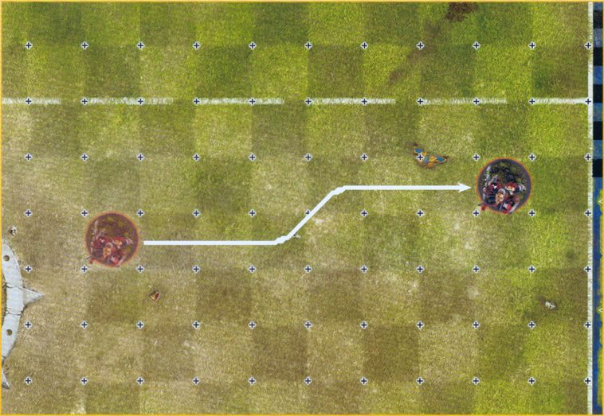
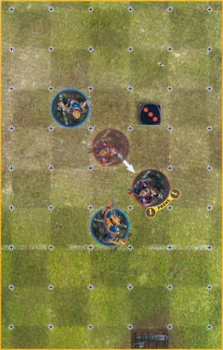
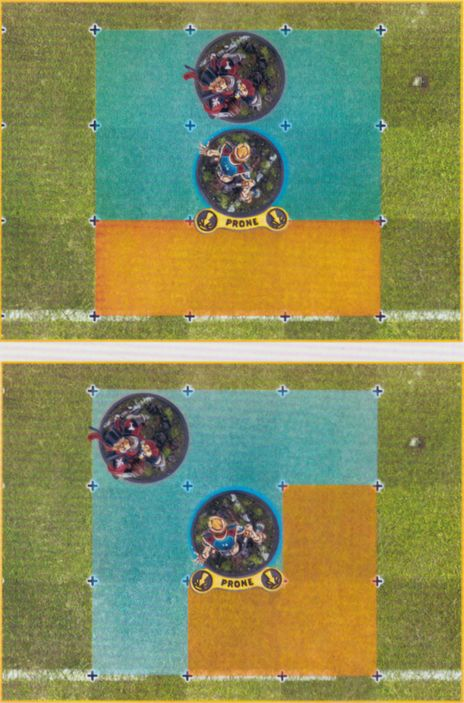
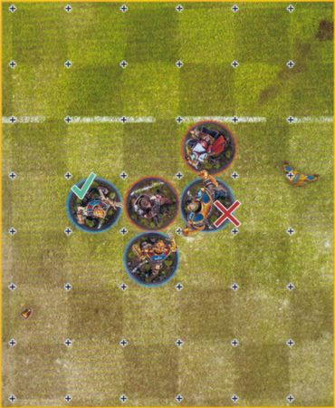
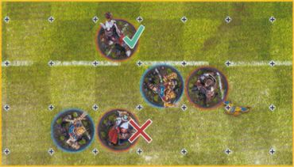
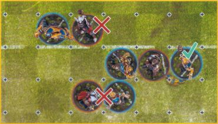

The Game of Blood Bowl
Now that we have explained all of the important principles, it's time to put them to use in explaining how to actually play a game of Blood Bowl - after all, we're here to inflict bone-crunching tackles and score amazing touchdowns!
Traditionally, a game of Blood Bowl is played between two sides and begins with one team kicking the ball to the other. The receiving team is the offence and are trying to get the ball into the opposition End Zone in order to score a Touchdown. They will usually do this through a series of daring plays, darting runs, precision passes and crunching tackles as they attempt to protect their ball carrier as they make a dash to score. The kicking team, or the defence, are trying to stop the offence from scoring, whilst simultaneously trying to regain possession of the ball so that they may attempt to score a Touchdown themselves.
Once a Touchdown has been scored, the teams will line up once more, with the team that scored becoming the kicking team. This process repeats itself until the final whistle blows (or one team is too beaten up to carry on), at which point the team that has scored the most Touchdowns is declared the winner and will celebrate in the most raucous fashion they know how to!
In this section we are going to take you through each step of a game of Blood Bowl from setting up at the start of the game, through the various Actions a player can take, such as Move or Block Actions, to how to reset at the end of a Drive.
A GAME OF TWO HALVES!
Like many sports, Blood Bowl is split into two halves of roughly equal length either side of half-time. Each half consists of eight rounds, with each round consisting of two turns - one for each Coach. This means that over the course of the game there will be two halves, 16 rounds and 32 turns - 16 for each coach.
Often, you will see rules referring to a Drive. A Drive is a period of time in the game between one team kicking off and either team scoring or the end of a half. This means there is no set time for the length of a Drive; some may last the entire half, whilst others may only last a single round or even turn!
SETTING UP THE GAME
Setting up a game of Blood Bowl is easy. Simply place the pitch on the playing surface in between the two Coaches and give each Coach a dugout in which to place any markers they may need during the game. Then, place the Random Direction Template in a place that both Coaches can easily see and that corresponds to the grid on the pitch: this will not be moved during the course of the game.
Once this is done, both Coaches should put their players on the pitch and explain all the details of their team to their opponent. You are now ready to play Blood Bowl!
YOUR FIRST FEW GAMES
For your first couple of games whilst you are learning, there are a few steps you don't need to worry about that you can just skip - Fan Factor, Weather and the Kick-off Event. These are all important parts of the game, though you can skip them whilst you get to grips with the basics.
Instead, assume that both teams have an equal Fan Factor, the weather is always Perfect Conditions and just ignore the Kick-off Event completely.
PRE-GAME SEQUENCE
With the game set up, the first thing that is required is to run through the Pre-game Sequence. There are five simple steps to the Pre-game Sequence, however, some of these are only relevant to League Play, which we will cover fully later on page 94, so you don't need to worry about these right now.
The Pre-game Sequence is as follows:
- THE FANS: Coaches determine how many of their team's fans have come to raucously cheer on their favourite team.
- THE WEATHER: Blood Bowl is played come rain or shine, and coaches will need to determine what the weather is like when the game kicks off.
- TAKE ON JOURNEYMEN: This step is only used in League Play, and so will be covered fully on page 94.
- INDUCEMENTS: This step is only used in League Play, and so will be covered fully on page 94.
- DETERMINE KICKING TEAM: Coaches will roll off to determine who is the kicking team (defence) and who is the receiving team (offence).
THE FANS
Blood Bowl is incredibly popular in the Old World, and for any given game, scores of fans will flock to the various stadia to witness the grand spectacle. Some of these will be dedicated fans who have travelled far and wide to watch their favourite team play, whilst others are simply fair-weather fans who just go to watch whichever two teams happen to be playing in their local area and then pick one to cheer for on the day.
FAN FACTOR
The combination of Dedicated Fans and Fair-weather Fans that are cheering for a team make up the team's Fan Factor for the game.
To work out your Fan Factor, you must first see how many Fair-weather Fans are cheering for your team by rolling a D3. Next, add the number of Fair-weather Fans to your Dedicated Fans Characteristic as found on your Team Roster (more on these later).
The total number is your Fan Factor and represents the number of thousands of fans that are in attendance and cheering for your team. You can record your Fan Factor on your Team Record Sheet if you wish.
For example: The Brionne Barons are determining their Fan Factor for a game. Their Coach rolls a D3 for their Fair-weather Fans and scores a 2. This is added to the team's Dedicated Fans Characteristic of 4, giving a total Fan Factor of 6.
THE WEATHER
Blood Bowl is played in all types of weather. Those that take to the gridiron are tough, hardy individuals who won't let a little rain stop them from pummelling their opposition into the damp turf! This doesn't mean that the weather won't have an impact on the game - far from it! The course of many games has been drastically altered by strong winds, blinding sun, sudden snowstorms, or all manner of other unconventional weather conditions!
To determine what the weather is like at the start of the game, each Coach rolls a D6 and adds the two rolls together. Consult the Weather Table below to see what impact the weather has.
WEATHER TABLE
| 2D6 | WEATHER CONDITION |
|---|---|
| 2 | SWELTERING HEAT: The intense heat causes some players to faint! At the end of each Drive whilst this weather condition is in effect, one Coach rolls a D3 and each Coach randomly selects that many of their players that were on the pitch when the Drive ended. The selected players are placed in the Reserves Box and cannot be set up on the pitch for the next Drive. |
| 3 | VERY SUNNY: The glorious sunshine makes for a beautiful day, but plays havoc with the passing game! Whenever a player makes a Passing Ability Test, apply a -1 modifier to the roll. |
| 4-10 | PERFECT CONDITIONS: Not too hot, nor too cold. It's perfect weather for Blood Bowl! There is no additional effect. |
| 11 | POURING RAIN: The heavens have opened and the sudden downpour has left the players soaked and the ball rather slippery! Whenever a player attempts to pick up or Catch the ball, or Intercept a Pass Action, they suffer a -1 modifier to the roll. |
| 12 | BLIZZARD: The freezing conditions and swirling snow makes the footing treacherous and drastically impedes a player's vision. Whenever a player attempts to Rush, apply an additional -1 modifier to the roll. Additionally, when a player makes a Pass Action, they may only attempt to make a Quick Pass or a Short Pass. |
DETERMINE KICKING TEAM
The final thing to do before starting a game is to determine which team is kicking (the defence) and which team is receiving the ball (the offence). In a real game of Blood Bowl, this is done with a simple coin toss, which many fans, players and even the officials, see as a cue to start the violence!
On the tabletop, this is represented through a simple roll-off (see page 33). The Coach who rolls highest decides which team is kicking and which team is receiving. Once this has been decided, you are ready to play a game of Blood Bowl!
START OF A DRIVE!
Once it has been decided who is kicking and who is receiving, it is time to start the first Drive of the game. Whenever a Drive starts, either at the start of a half or after one team has scored, Coaches will need to follow the Start of Drive Sequence below:
START OF DRIVE SEQUENCE
At the start of any Drive, Coaches run through the following steps in this order:
- SET-UP: Starting with the kicking team, Coaches will set up their players on the pitch ready for the Drive.
- THE KICK-OFF: The kicking team will kick the ball to the receiving team.
- THE KICK-OFF EVENT: As the ball is in the air, the Kick-off Event will happen.
SET-UP
When setting up their players, each team must select 11 players to take part in the Drive. If a team has less than 11 players, which is likely during the course of a game when players begin to get knocked-out or suffer casualties, then they must set up as many as they can. Any players not chosen to set up for the Drive are placed in the Reserves Box.
The kicking team must set up first followed by the receiving team. Players must be set up as follows:
- Players must be deployed in their own half, and not beyond the Line of Scrimmage into their opponent's half.
- At least three players from each team must be deployed in the Centre Field, directly adjacent to the Line of Scrimmage.
- No more than two players from each team may be deployed within each Wide Zone.
Should a team only be able to field three or fewer players, then they must be deployed in the Centre Field directly adjacent to the Line of Scrimmage.
TOO MANY PLAYERS
Sometimes, a situation may arise where one team has too many players on the pitch. This is usually down to an honest mistake by the team's Coach. If you notice this before the next Drive has started, simply correct the mistake and continue with the game. However, if the mistake is not noticed until the first Turn of the Drive has begun, then any extra players on the pitch will be immediately removed from the pitch and placed in the Reserves Box. The players that are removed cannot have the ball, cannot be a Star Player and are chosen by the opposition Coach.
THE KICK-OFF
Once both teams have set up, it is time for the kicking team to Kick-off.
NOMINATE KICKING PLAYER
The first thing that the kicking team must do is to nominate a kicking player. This can be any player on the kicking team that is on the pitch but not directly adjacent to the Line of Scrimmage (unless there is no other option) or in a Wide Zone. Most of the time nominating a kicking player doesn't really matter, however, some Skills, Traits or special rules may interact with the kicking player so it is good to get into the habit of nominating one whenever you Kick-off.
PLACE THE KICK
The Coach of the kicking team places the ball in any square in the opponent's half. This is the target square where the kicker is aiming to kick the ball.
THE KICK DEVIATES
It is not uncommon for a kick to go horribly off course; in fact, it is probably far more likely than an accurate kick! After the ball has been placed, the ball will Deviate from the target square; this is the square the ball will land in. At this point the ball is still high up in the air and cannot be caught until after the Kick-off Event has been resolved.
THE KICK-OFF EVENT
When the ball is punted into the air, it is a signal that the game has begun and anything can happen. In fact, many Blood Bowl fans take this to mean that they can immediately start causing a ruckus, which only encourages those on the pitch.
Immediately after the kick has Deviated, the Coach of the kicking team must roll 2D6 and consult the Kick-off Event Table below to see what manner of mayhem the kick-off has resulted in.
KICK-OFF EVENT TABLE
| 2D6 | KICK-OFF EVENT |
|---|---|
| 2 | GET THE REF: Each team immediately receives one free Bribe Inducement. This Bribe must be used by the end of the game or it is lost. |
| 3 | TIME-OUT!: If the kicking team's Turn Marker is on turn 6, 7 or 8 for the half, move both teams' Turn Marker back one space. Otherwise, move both teams' Turn Marker forwards one space. |
| 4 | SOLID DEFENCE: The Coach of the kicking team selects up to D3+3 Open players on their team. The selected players are then removed from the pitch and can be set up again following all the usual restrictions for setting up the team. |
| 5 | HIGH KICK: One Open player on the receiving team may immediately be placed in the square the ball is going to land in. |
| 6 | CHEERING FANS: Both Coaches roll a D6 and add the number of Cheerleaders on their Team Roster. The first Block Action performed during the Coach with the highest roll's next Turn receives an additional Offensive Assist. If both Coaches roll the same, both will receive this benefit during their next Turn. |
| 7 | BRILLIANT COACHING: Both Coaches roll a D6 and add the number of Assistant Coaches on their Team Roster. The Coach with the highest total, or both Coaches in the result of a tie, immediately gains a free Team Re-roll for the Drive ahead. If this free Team Re-roll has not been used by the end of the Drive, it is lost. |
| 8 | CHANGING WEATHER: Immediately make a new roll on the Weather Table. If the new result is Perfect Conditions, the ball will Scatter (3) in the air before it lands. |
| 9 | QUICK SNAP!: The Coach of the receiving team selects up to D3+3 Open players on their team. The selected players may immediately move one square in any direction, even if this takes them into the opposition's half. |
| 10 | CHARGE!: The Coach of the kicking team selects up to D3+3 Open players on their team. The selected players may then be activated one at a time, exactly as if it was their team's Turn, and perform a free Move Action. One of the selected players may instead perform a free Blitz Action, one may perform a free Throw Team-mate Action, and one may perform a free Kick Team-mate Action. If a selected player Falls Over or is Knocked Down during their activation, no further selected players can be activated and the Charge ends. |
| 11 | DODGY SNACK: Both Coaches roll a D6. The Coach that rolled the lowest, or both Coaches in the result of a tie, randomly selects one of their players on the pitch and rolls a D6. On a 2+, the player's pre-drive snack has not gone down well and for the duration of the Drive the player reduces their MA and AV by 1. On a 1, the player's pre-drive snack has violently disagreed with them; place the player in the Reserves box as they spend the rest of the Drive locked in the lavatory! |
| 12 | PITCH INVASION: Both Coaches roll a D6 and add their Fan Factor. The Coach that rolled lowest, or both Coaches in the result of a tie, randomly selects D3 of their players on the pitch. The selected players are immediately Placed Prone and become Stunned. |
WHAT GOES UP...
Once the Kick-off Event has been fully resolved, the ball will land in the square that it is in. If there isn't a player in the square then the ball will immediately Bounce from that square.
If there is a player in that square, they may immediately try to Catch the ball by making an Agility Test. If the test is passed, they will immediately gain possession of the ball. If the test is failed, then the ball will immediately Bounce from that square.
TOUCHBACKS
The ball must land safely in the opposition half for it to be a legal kick-off. If the ball ends up exiting the pitch or crosses the Line of Scrimmage into the kicking team's half, regardless if this was down to a Deviation, Bounce, or another effect, then it will result in a Touchback.
When a Touchback occurs, after the Kick-off Event has been fully resolved, the Coach of the receiving team may give the ball to any of their Standing players on the pitch. If there are no Standing players for them to give it to, they may place it on any unoccupied square in their half instead.
A TEAM'S TURN!
A real game of Blood Bowl is a manic affair with referees and officials constantly trying to keep track of all the chaos that is taking place on the pitch and attempting to exert a modicum of control over the players. On the tabletop, the game is divided into a series of Rounds and Turns to help Coaches keep track of what is going on and to make sure everyone knows exactly what is happening. During each Round, each Coach will get a Turn where they can activate their players and perform actions with them, bringing a sense of order and control to the otherwise chaotic game that is Blood Bowl!
ROUNDS
Each half of a game of Blood Bowl is divided into eight Rounds. In each Round both Coaches will get one Turn. Often you will hear Coaches refer to these as "Coach A's Turn 1". What this means is that it is Coach A's Turn in the first Round of the half. This will mean that each team will get eight Turns in each half.
During each Round, the team that received the ball at the start of the half will have the first Turn, followed by the team that kicked the ball. This continues until each team has played their eight Turns for the half.
At the start of the second half, the team that received the ball at the start of the first half will become the kicking team at the start of the second half.
If a Drive ends with a Touchdown, then the team that scored the Touchdown will kick the ball to the opposition before the next Turn begins.
For example: The Bretonnian team received the ball at the start of the first half, meaning that they had the first Turn in each Round. They score during their Turn 5 ending their Turn, and the Drive, with a Touchdown. The teams then set up again and the Bretonnian team will kick to the Tomb Kings team. Play then resumes with the Tomb Kings Turn 5.
TURNS
During each Coach's Turn they will get a chance to activate each of their players in turn until they have all activated or a Turnover is caused. During a team's Turn they are referred to as the active team and the opposition is referred to as the opposition or inactive team.
The first thing in each Turn that a team should do is to move their Turn Marker up one space. This is important so each Coach knows exactly what Turn it is. If your opponent forgets, simply remind them to do so in a polite and friendly manner.
PLAYER ACTIVATIONS
During your Turn, you may activate each of your players once, with the exception of players who began the Turn Stunned. Ideally, you will be able to activate each player in turn with no issues; however, it won't be uncommon for the Turn to end with a Turnover and some players may not have been activated, so take care in the order in which you activate your players!
When you activate a player, you must declare what kind of Action they are going to make. During their activation the player will be referred to as the active player. You may not change your declared Action half way through a player's activation. However, you are not obliged to complete the declared Action if you do not wish to, though the player will still count as having declared that Action even if they do not complete it. This is important as some Actions can only be declared once each Turn.
If a player declares an action that can only be declared once each Turn, and is unable to perform the action as a result of the effect of a specific Skill or Trait (such as a Trait that requires them to roll a dice and on certain rolls the player's activation will immediately end), they will still count as having declared the action and therefore no other player may declare the same action that Turn.
What follows is the list of actions that a player may declare when activated, along with a brief description of what they do. They will be described in more detail throughout this section.
MOVE ACTION
Probably the most basic Action of them all, a Move Action allows a player to move around the board up to its Move Allowance. There is no limit to the number of players that can declare a Move Action each Turn. Move Actions are covered on page 54.
SECURE THE BALL ACTION
A player may attempt to recover a loose ball safely. A player that declares a Secure the Ball Action may first make a free Move Action, however, this Move Action must end on the square containing a ball and the ball cannot be within 2 squares of any Standing opposition players (who are not Distracted). If this is not possible, a player cannot declare this Action. Only a single Secure the Ball Action can be declared each Turn. Players with the Big Guy keyword cannot declare this Action. Secure the Ball Actions are covered on page 59.
BLOCK ACTION
When a player makes a Block Action, they are targeting an opposition player with an attack. A Block Action allows a Standing player to perform a Block against one Standing opposition player in an attempt to push them back, knock them down, or even cause an injury. There is no limit to the number of players that can declare a Block Action each Turn. Block Actions are covered on page 60.
BLITZ ACTION
Simply put, a Blitz Action combines a Move Action with a Block Action so any rules that interact with either of these Actions will also interact with them when they are used as part of a Blitz Action. Only a single Blitz Action can be declared each Turn. Blitz Actions are covered on page 64.
PASS ACTION
The player may attempt to throw the ball to another player or part of the pitch. A player that declares a Pass Action may also make a free Move Action before making the pass, but may not continue moving after the pass has been made. Only a single Pass Action can be declared each Turn. Pass Actions are covered on page 70.
HAND-OFF ACTION
A player may attempt to hand-off the ball to another Standing player on their team. A player that declares a Hand-off Action may also make a free Move Action before making the hand-off, but may not continue moving after the hand-off has been made. Only a single Hand-off Action can be declared each Turn. Hand-off Actions are covered on page 74.
THROW TEAM-MATE ACTION
Some larger players have the ability to throw certain team-mates through the air, either to get the ball carrier up the field or to launch a 'willing' ally at the opposition. A player that declares a Throw Team-mate Action may also make a free Move Action before throwing their team-mate, but may not continue moving after the pass has been made. A player may only declare a Throw Team-mate Action if they have the Throw Team-mate Trait, and may only throw a team-mate that has the Right Stuff Trait. Only a single Throw Team-mate Action can be declared each Turn. Throw Team-mate Actions are covered on page 76.
FOUL ACTION
It's not all good, clean fun in Blood Bowl; some players are prone to sticking the boot in when the ref isn't looking! A player that declares a Foul Action may also make a free Move Action before making the foul, but may not continue moving after the foul has been made. Only a single Foul Action can be declared each Turn. Foul Actions are covered on page 69.
SPECIAL ACTION
There are many Skills and Traits that will provide a player with the option to declare a Special Action. Some Special Actions will also allow a player to make a free Move Action as part of the Special Action. Each Special Action will allow the player to perform a more unique action on the pitch, such as using a contraption of some sort, transfixing an opposition player where they stand, or even using a hidden blade to stab out at an opponent!
These are all referred to as Special Actions and will be fully outlined in the Skill or Trait that allows them to be used. The full list of Skills and Traits and their descriptions can be found on pages 123-138.
FOREGO ACTIVATION
Sometimes you may not wish to activate a player on your team, in which case they can declare they will forego their activation. In these instances, the player will not be activated, and so will not be subjected to any rules that take place at the start of or during their activation, with the exception of seeing if the Crowd Takes Action if the Player is deemed to be Stalling (see page 80). However, once a player has declared they will forego their activation, they cannot later be activated in the same turn.
DECLARE VS PERFORM
Some rules will come into play when a player 'declares' a specific action, whilst others will come into play when a player 'performs' a specific action. There is an important distinction between declare and perform:
An action is declared at the start of a player's activation, and so rules that come into play when an action is declared will take effect at this time - so long as the declared action matches the action in the relevant rule.
An action is performed when it actually happens, such as when you roll dice for a Block Action, move one or more squares as part of a Move Action, and so on. Rules that come into play when an action is performed will take place when that specified action is resolved during the player's activation.
This distinction is important for actions that combine multiple actions into one, such as a Blitz Action (a Move Action plus a Block Action) or a Pass Action (a Move Action plus a Pass Action).
For example:
During a Blitz Action:
- A rule that comes into play when a player declares a Block Action would not come into effect as no Block Action has been declared - the declared Action was a Blitz Action.
- A rule that comes into play when a player performs a Block Action would come into effect, triggering when the Block Action is performed as part of the Blitz Action.
For example:
During a Pass Action:
- If a rule comes into play when a player declares a Pass Action, it will come into effect as soon as the Pass Action is declared.
- If a rule comes into play when a player performs a Pass Action, then it would not come into play as soon as the player declared the Pass Action. Instead, it will come into play after the player had made their Move Action, before the Pass Action is performed.
REPLACING ACTIONS
Some Special Actions allow a player to replace the Block Action made as part of a Blitz Action with the Special Action. When this happens, this will still count as a team's one Blitz Action of the Turn. Additionally, it is worth noting that even though the Special Action is replacing a Block Action, it is not one itself and so any rules, Skills or Traits that affect a Block Action will have no effect.
ACTIVATED PLAYERS
Over the course of a Turn, it can be difficult to track which players have activated and which have not.
To help with this, at the start of each of your Turns, you should make sure that each of your players that can be activated are facing the opposition End Zone. Then, after a player has been activated, turn them to face your End Zone. That way, it is easy for both Coaches to see which players have activated and which have yet to do so.
MOVE ACTIONS!
When a player performs a Move Action, they can move around the pitch a number of squares equal to their Move Allowance. Players may move in any direction, including diagonally, into any adjacent unoccupied square. An unoccupied square is any square that does not contain another player (even if it contains the ball), whilst an occupied square is any square that does contain another player, regardless of whether they are Standing, Prone or Stunned. Players may not move through an occupied square.
Players are never obliged to use their full Move Allowance, and may move zero squares if they wish. Players can never voluntarily move off the pitch.

Here, the Bretonnian Knight Catcher is making a Move Action. As they have an MA of 7, they can move up to 7 squares in any direction. In this example, the Bretonnian Knight Catcher doesn't need to make any rolls to Dodge as they are not moving out of an opposition player's Tackle Zone at any point.
STANDING UP
Players that begin their activation Prone must declare an Action that includes a Move Action in order to first stand up. When a player stands up it will cost them 3 squares of their Move Allowance to do so, and they must stand up before attempting to do anything else.
If a player with a Move Allowance Characteristic of 2 or less (regardless of any modifiers) wishes to stand up, they must roll a D6. On a 4+, the player may stand up using their full Move Allowance to do so. On a 1-3, the player remains Prone and their activation immediately ends.
If a Prone player is not activated during a Turn, then they will remain Prone until they are activated in a later Turn.
DODGING
When the active player wishes to move out of a square in which they are being Marked, they will need to Dodge. A player must make a Dodge Roll each time they wish to leave a square in which they are Marked.
When a player wishes to Dodge, move the player into the square they wish to move into. Next, make an Agility Test for the model that is attempting to Dodge, applying a -1 modifier for each opposition player that is Marking the square they are moving into. If the Agility Test is passed, they will stay on their feet and may continue their movement, even Dodging again if they wish. If the test is failed, the player immediately Falls Over.
If there are no opposition players Marking the square a player is attempting to Dodge into, then there are no modifiers to the Agility Test.
Some Skills or Traits may apply additional modifiers to a player attempting to Dodge.

For example: This Bretonnian Knight Catcher wishes to Dodge away from this Skeleton Lineman. As the square the Bretonnian Knight Catcher wishes to move into isn't Marked by any opposition players, there are no modifiers to its Agility Test. The Bretonnian Knight Catcher has an AG of 3+ and rolls a 5, succeeding in the test and successfully Dodges away.

For example: This Bretonnian Knight Catcher wishes to Dodge away from this Skeleton Lineman. As the square the Bretonnian Knight Catcher wishes to move into is Marked by the Tomb Guardian, there is a -1 modifier to its Agility Test. The Bretonnian Knight Catcher has an AG of 3+ and rolls a 3, which fails due to the -1 modifier for Dodging into a square Marked by the Tomb Guardian. The Bretonnian Knight Catcher is moved into the square they attempted to Dodge into and then Falls Over.
JUMPING OVER PLAYERS
When performing a Move Action, a player may attempt to Jump over players that are Prone or Stunned and into an unoccupied square beyond. A player that attempts to Jump over another player in this manner may attempt to Jump into an unoccupied square that is adjacent to the Prone or Stunned player they are attempting to Jump over, but is not already adjacent to the jumping player. The diagrams below show a Bretonnian Knight Catcher attempting to Jump over a Skeleton Lineman from two different angles. The orange squares are eligible squares to Jump into, whilst the blue ones are not.

When a player attempts to Jump over another player in this manner, they must make an Agility Test before moving over the downed player. The jumping player will suffer a negative modifier equal to the number of opposition players Marking the square they are currently in, or the number of opposition players Marking the square they are jumping into, whichever is higher. If the Agility Test is passed, place the jumping player Standing in the target square; they may continue their activation as normal. If the test is failed, place the jumping player in the target square where they will Fall Over and their activation immediately ends. If a natural 1 is rolled for the Agility Test, the player will instead Fall Over in the square they are in and their activation immediately ends. Some Skills or Traits may apply additional modifiers to a player attempting to Jump over other players.
When a player attempts to Jump over another player in this manner, they must make an Agility Test before moving over the downed player. The jumping player will suffer a negative modifier equal to the number of opposition players Marking the square they are currently in, or the number of opposition players Marking the square they are jumping into, whichever is higher.

For example: This Bretonnian Knight Catcher wishes to Jump over this Prone Skeleton Lineman. As there are no opposition players Marking the Bretonnian Knight Catcher, or the square they are attempting to Jump into, there are no modifiers to the Agility Test. The Bretonnian Knight Catcher has an AG of 3+ and rolls a 4, successfully Jumping over the Skeleton Lineman.

For example: This Bretonnian Knight Catcher wishes to Jump over this Prone Skeleton Lineman, though will need to Rush once in order to do so. The Bretonnian Knight Catcher rolls a 5 for their Rush attempt, which succeeds, and then rolls their Agility Test, scoring a 3 and successfully jumps over the Skeleton Lineman.

For example: This Bretonnian Knight Catcher wishes to Jump over this Prone Skeleton Lineman. There are currently two opposition players Marking the Bretonnian Knight Catcher, and one opposition player Marking the square they are attempting to Jump into. As a result, the Bretonnian Knight Catcher will suffer a -2 modifier to the Agility Test, as there are more opposition players Marking the square they are attempting to Jump out of; they will not suffer any modifiers from the opposition players Marking the square they are jumping into in this instance. The Bretonnian Knight Catcher has an AG of 3+ and rolls a 6, which succeeds even with the -2 modifier!
PICKING UP THE BALL
Whenever a player voluntarily moves into a square containing the ball during their activation, they must immediately make an Agility Test to attempt to pick it up. If the test is passed, the player immediately gains possession of the ball and may continue their activation. If the test is failed, the player fails to pick up the ball and a Turnover is caused - the ball will then Bounce from the player's square. Apply a -1 modifier to this roll for each opposition player that is Marking the player attempting to pick up the ball.
The roll to pick up the ball is always done after any rolls required to move into the square containing the ball, such as any rolls to Rush, Dodge or Jump over another player, but before any other rolls that may occur.
If a player is ever involuntarily moved into a square containing the ball, such as being pushed, or outside their activation then they may not attempt to pick up the ball and it will Bounce; however, no Turnover will be caused.
For example: This Bretonnian Knight Catcher wishes to Jump over this Prone Skeleton Lineman, though will need to Rush once in order to do so. The Bretonnian Knight Catcher rolls a 5 for their Rush attempt, which succeeds, and then rolls their Agility Test, scoring a 3 and successfully jumps over the Skeleton Lineman.
For example: This Bretonnian Knight Catcher wishes to Jump over this Prone Skeleton Lineman. There are currently two opposition players Marking the Bretonnian Knight Catcher, and one opposition player Marking the square they are attempting to Jump into. As a result, the Bretonnian Knight Catcher will suffer a -2 modifier to the Agility Test, as there are more opposition players Marking the square they are attempting to Jump out of; they will not suffer any modifiers from the opposition players Marking the square they are jumping into in this instance. The Bretonnian Knight Catcher has an AG of 3+ and rolls a 6, which succeeds even with the -2 modifier!
RUSHING
Whenever a player performs an Action that includes a Move Action, they may attempt to push themselves and move that little bit further than they normally could; this is called Rushing. When a player attempts to Rush, the extra squares of Move Allowance they gain may be used to do anything that they could normally do with their Move Allowance just as if it was normal movement.
When a player wishes to Rush, move the player into the square they wish to Rush into and then roll a D6. On a 2+ the player successfully manages to Rush into the square and may continue their activation. On a 1, the player trips and Falls Over in the square they were attempting to Rush into and their activation immediately ends.
Players may attempt to Rush a maximum of two times during their activation. If, when a player attempts to Rush, there would be multiple rolls for moving into the square, such as having to Dodge, then the roll for attempt to Rush will always come first.

Here, the Bretonnian Squire has already used their Move Allowance of 6, but wishes to try to Rush so they can Mark the Tomb Kings Blitzer. They Rush one square and roll a 5, which is a success. They then decide to try to Rush again to move adjacent to the Tomb Kings Blitzer; however, a 1 is rolled and the Bretonnian Squire Falls Over in the square they were trying to Rush into.
SECURE THE BALL ACTIONS!
Sometimes, a cautious approach is best – especially when it comes to recovering the ball! Should a player find that the ball has come to a rest on the ground, and there are no opponents nearby, they may decide to safely pick it up rather than attempt to do so at speed and risk letting it slip through their fingers and cause a turnover.
PERFORMING A SECURE THE BALL ACTION
A player may only declare a Secure the Ball Action if the ball is loose on the ground and is not within 2 squares of any Standing opposition players that are not Distracted. A player that declares a Secure the Ball Action may first make a free Move Action, however, this Move Action must finish on a square containing a ball otherwise a Turnover is caused.
When performing a Secure the Ball Action, the player must attempt to pick up the ball. A player attempting to pick up a ball as part of a Secure the Ball Action does not make an Agility Test; instead they roll a D6 and on a 2+ they will automatically pick up the ball and their activation immediately ends. On a 1, the player fails to pick up the ball and a Turnover is caused – the ball will then Bounce from the player's square.

For example: The Bretonnian Knight Catcher wants to declare a Secure the Ball Action. As there are no Standing opposition players within 2 squares of the ball, they can Move into the square containing the ball and attempt to pick it up on a 2+. Their activation then ends.

This time, the Bretonnian Knight Catcher wants to declare a Secure the Ball Action; however, there is an opposing Skeleton Lineman within 2 squares of the ball. As a result, the Bretonnian Knight Catcher cannot declare a Secure the Ball Action at this time.
BLOCK ACTIONS!
Blood Bowl is a violent game, one where bone-crunching tackles and excessive use of force are actively encouraged by both the fans and the officials! So long as weapons are not used, almost anything goes in regards to players blocking each other, and a whirlwind of fists pummelling a player into submission is just as acceptable as a well-timed tackle to floor an opposition - it's all the same to the fans. This has resulted in many innovative ways to take down an opponent and is all part of the game's charm. After all, the fans want to be entertained, and what's more thrilling than a full-contact blood sport where aggression is the first thing on every player's mind!
When a player declares a Block Action, they must nominate one Standing opposition player they are Marking to be the target of the Block Action. They will then perform the Block Action on the target player.
PERFORMING A BLOCK ACTION
Once a player has declared the target of their Block Action, the next thing to do is to work out how many Block Dice they will roll for the Block Action. This is done by comparing the Strength Characteristic of the player performing the Block Action with the Strength Characteristic of the target player. If one player is stronger than the other, then they are more likely to knock them down!
To do this, both players take their Strength Characteristic and apply any modifiers that affect it, such as any Skills or Traits that modify a player's ST or any Offensive or Defensive Assists.
- If, after any modifiers have been applied, both players have the same Strength Characteristic, a single Block Dice is rolled.
- If, after any modifiers have been applied, one player has a higher Strength Characteristic than the other, then two Block Dice are rolled and the Coach of the player with the higher Strength Characteristic chooses the result.
- If, after any modifiers have been applied, one player has a Strength Characteristic that is over double than that of the other, then three Block Dice are rolled and the Coach of the player with the higher Strength Characteristic chooses the result.
ASSISTING A BLOCK ACTION
The most common way of modifying a player's Strength Characteristic during a Block Action is through Assists. This is when the team-mates of the player performing the Block Action, or the team-mates of the target of the Block Action, help out their ally in the ensuing clash. This will often result in multiple players ganging up on another player in order to increase the odds of knocking them to the turf.
There are two types of Assist: Offensive and Defensive.
OFFENSIVE ASSISTS
An Offensive Assist is when another player on the active team is able to Assist the player performing the Block Action. For each Offensive Assist the player performing the Block Action receives they gain a +1 modifier to their Strength Characteristic for the duration of the Block Action. For a player to be able to provide an Offensive Assist, they must be Marking the target of the Block Action and must not be Marked by any other opposition player.

For example: This Tomb Kings Blitzer has declared a Block Action against the Bretonnian Squire. The Skeleton Lineman can provide an Offensive Assist as they are Marking the Bretonnian Squire and are not Marked by any other opposition players, granting a +1 modifier to the Tomb Kings player's Strength. The Tomb Guardian cannot provide an Offensive Assist as although they are Marking the Bretonnian Squire, they are also Marked by the Grail Knight, and so cannot Assist.
DEFENSIVE ASSISTS
A Defensive Assist is when another player on the inactive team is able to Assist the target of the Block Action. For each Defensive Assist the target of the Block Action receives, they gain a +1 modifier to their Strength Characteristic for the duration of the Block Action. For a player to be able to provide an Defensive Assist, they must be Marking the player performing the Block Action and must not be Marked by any other opposition player.

For example: The Tomb Kings Blitzer has declared a Block Action against the Bretonnian Squire. The Grail Knight may not provide a Defensive Assist as, although they are Marking the Tomb Kings Blitzer, they are also being Marked by the Skeleton Lineman. However, the Bretonnian Knight Thrower may provide a Defensive Assist as they are also Marking the Tomb Kings Blitzer and are not Marked by any other opposition players, granting a +1 modifier to the Bretonnian Squire's ST.

For example: Here, the Tomb Kings Blitzer has declared a Block Action against the Bretonnian Squire. Neither the Skeleton Lineman or the Grail Knight may provide Assists as, although they are each Marking the relevant players, they are also both Marking each other. The Bretonnian Knight Thrower may also not provide a Defensive Assist as they are currently being Marked by the Tomb Guardian. However, the Tomb Kings Thrower may provide an Offensive Assist as they are Marking the Bretonnian Squire and are not Marked by any other player, granting a +1 modifier to the Tomb Kings Blitzer and giving them the advantage in the Block Action.
BLOCK DICE
When a player performs a Block Action, they will use a number of special Block Dice to determine the outcome. The number of which will depend on the Strength characteristics of the player performing the Block Action and the target player as described previously.
Block Dice are six-sided dice that feature five different icons instead of the usual numbers 1-6. Each of these icons represents a different outcome from the Block Action, from the player successfully flooring their opponent, to the target managing to hit back in retaliation! These icons and what they do are described below:
PLAYER DOWN
The player performing the Block Action is immediately Knocked Down by the target player as if the target player had performed a Block Action.
BOTH DOWN
Both players find themselves hitting the deck after an almighty collision. Both the player that performed the Block Action and the target player are Knocked Down by each other in the squares they are in as if they had both performed a Block Action.
PUSH BACK
The player gives their opponent a mighty shove, forcing them backwards. The target player is Pushed Back one square by the player performing the Block Action as described as follows. The player that performed the Block Action may choose to Follow-up, in which case they move into the square vacated by the Pushed player.
STUMBLE
The target does their best to avoid being clobbered by their attacker. If the target player has the Dodge Skill, then this result becomes Push Back as described above. Otherwise, this result becomes POW as described below.
POW
The target is knocked flying and ends up hitting the dirt with great force. Apply the Push Back result to the player as described above. Additionally, after the Push Back result has been applied, the target player is immediately Knocked Down by the player performing the Block Action in the square they are now in.
SELECT AND APPLY RESULT
When a Block Action is made, it is always the Coach of the player performing the Block Action that rolls the Block Dice. However, the Coach that decides which result is applied depends on the Strength characteristics of both players as described earlier. If only a single Block Dice is rolled then that result must be chosen. If multiple Block Dice are rolled, it is always the Coach of the stronger player that chooses the result.
PUSHED PLAYERS
When a player is Pushed Back, usually as a result of the Push Back or POW results from a Block Action, they will be Pushed Back one square away from the player that performed the Block Action so that they are in an adjacent square that is not adjacent to the player that performed the Block Action. The squares that a player can be Pushed into will depend on the direction of the Push, as shown in the diagrams below:
The square the Pushed Back player is moved into is chosen by the Coach of the player performing the Block Action, though they must choose an unoccupied square if there is one. If a player is Pushed Back onto the ball, it will automatically Bounce though no Turnover is caused.
Sometimes there will be no unoccupied squares to move the Pushed Back player into, either because there are other players occupying those squares, or because a player is at the edge of the pitch. These situations will result in either a Chain Push or a player being Pushed into the Crowd.
CHAIN PUSHES
If there is no unoccupied square for the Pushed Back player to be moved into then they will be Pushed Back into a square containing another player, which will cause a Chain Push. The player that was originally Pushed Back will be Pushed as normal, and the player occupying the square the originally Pushed player has been Pushed Back into will be themselves Pushed Back as if they had been Pushed Back by the player who is now occupying their square. When a Chain Push occurs, the Coach of the player performing the original Block Action will choose the direction of all Pushes within the Chain Push. A player can still be Chain Pushed even if they are Prone or Stunned. Below are two diagrams showing examples of a Chain Push:
PUSHED INTO THE CROWD
If a player is adjacent to a Sideline or within an End Zone when they are Pushed Back, and there are no unoccupied squares for them to be Pushed Back into, then they will be Pushed into the Crowd. A player that is Pushed into the Crowd will risk Injury by the Crowd, which is described on page 68.
If a player that is holding the ball is Pushed into the Crowd, then the ball will be Thrown-in exactly as described on page 73. Additionally, if a player on the active team is Pushed into the Crowd then a Turnover is caused.
FOLLOW-UP
When a player decides to Follow-up as the result of Pushing an opposition player during a Block Action, regardless of which result was chosen that allowed them to Push Back the player, they will immediately move into the square that has been vacated by the Pushed player. This is a free move and doesn't cost any Move Allowance. There is also no need for the player to Rush or Dodge, and any Skills or Traits that would normally apply to a player leaving another player's Tackle Zone do not apply if the player leaves due to a Follow-up.
The decision to Follow-up must be made before any other dice are rolled, such as the Armour Roll if the Pushed player was also Knocked Down.
BLITZ ACTIONS!
Sometimes you need a little more power behind a tackle, or the focus of your ire is further away than arm's reach. This is where a Blitz comes in, allowing a player to get a good run-up to achieve their desired effect - putting their opponent on the floor!
Simply put, a Blitz Action combines both a Move Action and a Block Action; however, only a single player may perform a Blitz Action each Turn. When a player declares a Blitz Action, they must also declare which opposition player is the intended target of the Block Action part of the Blitz Action. Players may not declare an opposition player as the intended target of the Block Action if they cannot reach the player at all with their Move Action (including any extra squares gained by attempting to Rush).
When a player declares a Blitz Action, they may make a Move Action following all the normal rules for a Move Action as described on page 54. Additionally, if at any point during this Move Action they are adjacent to the opposition player they declared as their intended target, then they may perform a Block Action against them following all the normal rules for a Block Action, however, this Block Action will cost the player that declared the Blitz Action a point of Move Allowance.
After the player has performed the Block Action, they can continue their Move Action using any remaining Move Allowance they have left, following all the normal rules for a Move Action.
If a player has used all of their Move Allowance before making the Block Action against their intended target then they may attempt to Rush as normal to gain the extra point of Move Allowance required to perform the Block Action.
Players are never required to perform the Block Action against their intended target if they decide not to, though they will still count as having used their team's one Blitz Action for the Turn.
For example: The Skeleton Lineman has declared a Blitz Action against the Bretonnian Squire and uses all of their Move Allowance of 5 to end next to their intended target. As a result, the Skeleton Lineman must Rush in order to perform the Block Action part of the Blitz Action. The Skeleton Lineman rolls a 4 and succeeds, so the Block Action can go ahead.
ARMOUR AND INJURIES!
Nuffle's sacred game is a violent one at the best of times; the word blood is in the title for a reason! This often means that players will find themselves hurting from all manner of tackles, collisions, and other inexplicable situations. The odds of getting injured from tripping over a stray rock are often just as likely as being bitten by a Zombie or gored by a Minotaur, and even death is an ever-present threat!
Many Blood Bowl players sport an impressive number of scrapes and scars, each one telling a story of past exploits on the gridiron - even if many such tales are somewhat exaggerated.
RISKING INJURY
Whenever an Armour Roll is made for a player, they risk the chance of an Injury. As described on page 37, if a player's armour is not broken then they will be fine and suffer no further effect. However, if the player's armour is broken then an Injury Roll must be made for them.
INJURY ROLLS
Whenever an Injury Roll must be made for a player, the Coach of the opposing team rolls 2D6 and consults the Injury Table below:
INJURY TABLE
| 2D6 | RESULT |
|---|---|
| 2-7 | STUNNED: The player is immediately Stunned. |
| 8-9 | KNOCKED-OUT: The player is immediately Knocked-out. Remove them from the pitch and place them in the Knocked-out box of their dugout. |
| 10-12 | CASUALTY: The player suffers a Casualty. Remove them from the pitch and place them in the Casualty box of their dugout. The Coach of the opposing team then makes a Casualty Roll against them. |
STUNTY PLAYERS
If an Injury Roll is made for a player with the Stunty Trait, then use the Stunty Injury Table below instead of the standard one. After all, being small and fragile means you are far more likely to get broken!
STUNTY INJURY TABLE
| 2D6 | RESULT |
|---|---|
| 2-6 | STUNNED: The player is immediately Stunned. |
| 7-8 | KNOCKED-OUT: The player is immediately Knocked-out. Remove them from the pitch and place them in the Knocked-out box of their dugout. |
| 9 | BADLY HURT: The player suffers a Casualty. Remove them from the pitch and place them in the Casualty box of their dugout. In League Play, no Casualty Roll is made for them, instead they automatically suffer the Badly Hurt result on the Casualty Table. |
| 10-12 | CASUALTY: The player suffers a Casualty. Remove them from the pitch and place them in the Casualty box of their dugout. The Coach of the opposing team then makes a Casualty Roll against them. |
CASUALTY ROLLS
Whenever a player suffers a Casualty, the opposing Coach makes a Casualty Roll against them by rolling a D16 and consulting the Casualty Table below. In all instances the player will miss the rest of the current game, but may also suffer some other long term effects.
During Exhibition Play and Matched Play, this will have little to no effect on the game and can often be skipped entirely to speed things up. However, if your opponent has an Apothecary or a Special Rule associated with a specific result on the Casualty Table (usually the Dead result) then you should make sure to roll just in case.
CASUALTY TABLE
| D16 | RESULT |
|---|---|
| 1-8 | BADLY HURT: The player suffers no long term effects. |
| 9-10 | SERIOUSLY HURT: The player must miss their next game. |
| 11-12 | SERIOUS INJURY: The player suffers a Niggling Injury and must miss their next game. |
| 13-14 | LASTING INJURY: The player suffers a Characteristic reduction and must miss their next game. |
| 15-16 | DEAD: The player is dead! |
MISS NEXT GAME
In League Play, when a player is forced to miss their team's next game they will not be eligible for the team's next match. Make a note of this on your team roster.
NIGGLING INJURY
Make a note on your team roster that the player has suffered a Niggling Injury. When making a Casualty Roll for a player with a Niggling Injury, apply a +1 modifier to the roll for each Niggling Injury the player has.
CHARACTERISTIC REDUCTION
The player has one of their Characteristics reduced by 1 so that it is worse. To determine which Characteristic has been reduced, roll a D6 and consult the Lasting Injury Table below:
| D6 | LASTING INJURY | CHARACTERISTIC REDUCTION |
|---|---|---|
| 1-2 | HEAD INJURY | -1 AV |
| 3 | SMASHED KNEE | -1 MV |
| 4 | BROKEN ARM | -1 PA |
| 5 | DISLOCATED HIP | -1 AG |
| 6 | BROKEN SHOULDER | -1 ST |
In the case of Move Allowance and Strength, simply reduce the value by 1.
Characteristics that are represented as a target number are affected slightly differently. For Passing Ability and Agility, increase the number in front of the + symbol by 1, making the respective test harder to succeed. For Armour Value, reduce the number in front of the + by 1, making it easier for an opposing Coach to succeed in an Armour Roll against the affected player.
If a Characteristic reduction is rolled that cannot be applied, such as if the Characteristic is already as bad as it can be, then do not apply the Characteristic reduction and treat the result as Miss Next Game instead - Nuffle clearly thinks that the player has suffered enough already!
DEAD
The player is dead. Remove them from your team roster.
GETTING EVEN
Revenge is commonplace in the world of Blood Bowl; those players that end up getting injured are likely to hold a grudge against the player or team that forced them to have to watch from the sidelines. Of course, this resentment builds up over time and often becomes a burning hatred, with the player waiting for their chance to get their own back!
In League Play, whenever a player suffers a Casualty that results in either a Seriously Hurt, Serious Injury or Lasting Injury, and they are forced to miss their next game, roll a D6. On a 4+, this player gains the Hatred (X) Trait where X is one Keyword that the player who caused the Casualty has as chosen by the injured player's Coach. This may not be any of the following Keywords: Big Guy, Blitzer, Blocker, Catcher, Lineman, Runner, Special, Thrower.
A player may gain multiple versions of the Hatred (X) Trait during the course of a league.
INJURY BY THE CROWD
When a player is Pushed into the Crowd or lands in the crowd by any other means, there is no telling how they will be treated by those they land amongst - Blood Bowl fans are a vicious bunch at the best of times! As a result, they will risk Injury by the Crowd.
When a player risks Injury by the Crowd, immediately make an Injury Roll for them as described on page 66. If the player would be Stunned, place them in their team's Reserve Box instead. Otherwise, follow the result as shown on the relevant Injury Table.
APOTHECARIES
If a team has an Apothecary, then they can use them once per game in order to attempt to Patch-up a player on their team that has either been Knocked-out or suffered a Casualty.
If an Apothecary is used to Patch-up a Knocked-out player then the player is not removed from the pitch and placed in the Knocked-out Box of their Dugout as normal. Instead, the player will become Stunned in the square they are in. If the player was Knocked-out as a result of an Injury by the Crowd, they are placed in the Reserves Box of their Dugout instead.
If an Apothecary is used to Patch-up a player that has suffered a Casualty, then it works slightly differently. After a Casualty Roll is made for the player that has suffered a Casualty, their Coach may declare they are using their Apothecary. The opposing Coach makes a second Casualty Roll for the player, and the player's controlling Coach may select either of the two results to apply. If a Badly Hurt result is selected, then the player is successfully Patched-up and placed into their Reserves Box instead of the Casualty Box.
FOUL ACTIONS!
It may come as a surprise to some people, but fouling is actually very much against the rules of Blood Bowl – not that it stops anyone of course! Numerous players over the years have risked the wrath of the referees all for the chance to put the boot into a particularly irritating opposition player in order to give their team a leg-up. In fact, many teams and players have made it their mission to perfect the art of fouling, and some have used this to propel their career forwards at the expense of those they leave writhing on the gridiron!
Nowadays, fouling is not just a common occurrence but also an expected one amongst fans and pundits. So much so that the Referees and Ruleskeepers Guild (RARG) have actually provided guidelines to advise their members of the best ways to turn a blind eye to such devious antics on the pitch!
PERFORMING A FOUL ACTION
As mentioned earlier, a single player on the active team may declare a Foul Action each Turn. When a player declares a Foul Action they are first allowed to make a Move Action, though they cannot continue to move after the Foul Action has been committed. The player must finish their Move Action adjacent to a Prone or Stunned opposition player in order to perform the Foul Action.
To perform the Foul Action, the player makes an Armour Roll (see page 37) for the target of the Foul Action. Offensive and Defensive Assists will also apply to a Foul Action in the same manner as a Block Action. When making the Armour Roll, the player making the Foul Action may apply a +1 modifier for each Offensive Assist, and apply a -1 modifier for each Defensive Assist.
For example: The Tomb Kings Blitzer has declared a Foul Action and has finished their Move Action adjacent to the Bretonnian Squire. They make an Armour Roll for the Bretonnian Squire, applying a +1 modifier for the Skeleton Lineman who is providing an Offensive Assist. As the Tomb Guardian is being Marked by the Grail Knight, they cannot provide an Offensive Assist.
BEING SENT-OFF
Regardless of the outcome, if during a Foul Action a natural double is rolled for either the Armour Roll or Injury Roll, then the player performing the Foul Action is Sent-off after the Foul Action has been completed. The Sent-off player is immediately removed from the pitch and will play no further part in the game. When a player on the active team is Sent-off, a Turnover is caused.
ARGUE THE CALL
When a player is Sent-off for any reason, their Coach may attempt to Argue the Call – roll a D6 and refer to the table below:
| D6 | RESULT |
|---|---|
| 1 | "YOU'RE OUTTA HERE!": The referee is having none of it and has ejected the Coach as well for daring to question their authority on the pitch! The player is still Sent-off and their controlling Coach may not attempt to Argue the Call for the remainder of the game. |
| 2–5 | "I DON'T CARE!": The referee is not interested in your argument and sticks to their decision. The player is still Sent-off. |
| 6 | "WELL, WHEN YOU PUT IT LIKE THAT...": You make some good points and the referee is swayed. The player is placed back in the square they were in and is not Sent-off, though a Turnover is still caused. |
Continuing with our example, the Tomb Kings Blitzer makes an Armour Roll for the Bretonnian Squire they are fouling, rolling a 6 and a 3, which breaks their armour. They then make an Injury Roll and roll a double 2, causing the Tomb Kings Blitzer to be Sent-off and the Bretonnian Squire to be Stunned. The Tomb Kings Coach attempts to Argue the Call and rolls a 1, meaning that the Tomb Kings Blitzer is still Sent-off and the Coach cannot Argue the Call for the remainder of the game!
PASS ACTIONS!
The quickest way to move the ball around the pitch is by passing it to another player. Dedicated throwers make it their mission to collect the ball before launching it towards an unmarked team-mate in the hope that they will catch it and run it in for a touchdown. Not only do such plays take a great amount of precision and skill, but they also look outstanding when pulled off. Though some prefer to simply run the ball down the length of the gridiron, there is no doubt that it is the passing game that gets the fans on their feet in awe; there are few things as satisfying as watching the ball sail through the air before landing safely in the outstretched arms of a team-mate who is darting towards the End Zone to score!
PERFORMING A PASS ACTION
During each Turn, a single player on the active team may declare a Pass Action in order to attempt to throw the ball around the pitch. When a player declares a Pass Action they are first allowed to make a Move Action, though they cannot continue to move after the Pass Action has been attempted. A player does not have to be in possession of the ball to declare a Pass Action, and may attempt to pick up the ball as part of their Move Action. Coaches are free to measure any distances with the Range Ruler at any time.
When a player performs a Pass Action, they follow the following steps in order:
- Declare Target Square
- Measure Range
- Test for Accuracy
- Interceptions
- Resolve Pass Action
The target square will fall into one of four sections on the Range Ruler (see page 26) as explained below:
- I: Quick Pass
- II: Short Pass
- III: Long Pass
- IIII: Long Bomb
DECLARE TARGET SQUARE
The Coach declares which square is the target of the Pass Action. The declared square must be wholly underneath the maximum range of the Range Ruler. If a square is only partially underneath the Range Ruler, then it cannot be the target square. Though it is likely that the target square will contain a team-mate ready to attempt to catch the ball, this doesn't always have to be the case.
MEASURE RANGE
After the target square has been declared, you will need to measure the range to it and determine what kind of pass will be required - either a Quick Pass, Short Pass, Long Pass or Long Bomb.
To measure the range, place the circle at the end of the Range Ruler over the centre of the square occupied by the player performing the Pass Action. The other end of the Range Ruler is positioned so that it covers the target square with the line running through the centre of the Range Ruler passing directly through the centre of the target square.
The target square will fall into one of four sections on the Range Ruler (see page 26) as explained below:
- I: Quick Pass
- II: Short Pass
- III: Long Pass
- IIII: Long Bomb
This Bretonnian Thrower wishes to pass the ball to the Bretonnian Knight Catcher using a Pass Action. Using the Range Ruler we can determine that it would be a Short Pass.
If the target square sits partially within two sections (i.e., the line between two sections intersects the target square) then it is always considered to be in the further away of the two sections from the player performing the Pass Action.
If it is not clear exactly which type of pass is required, then you can use the Passing Range Chart opposite to make sure you get it right.
TEST FOR ACCURACY
The player performing the Pass Action must now make a Passing Ability Test to see if the Pass Action is successful. To do this, they roll a D6 and apply the following modifiers:
- If the player is attempting a Quick Pass, there is no modifier.
- If the player is attempting a Short Pass, apply a -1 modifier.
- If the player is attempting a Long Pass, apply a -2 modifier.
- If the player is attempting a Long Bomb, apply a -3 modifier.
- Apply a -1 modifier for each opposition player Marking the player performing the Pass Action. Depending on the result, the pass will either be an Accurate Pass, an Inaccurate Pass or a Fumbled Pass.
ACCURATE PASS
If the Passing Ability Test is successful, or the roll is a natural 6, then the pass is an Accurate Pass. The ball will land in the target square.
INACCURATE PASS
If the Passing Ability Test is failed, then the pass is an Inaccurate Pass. The ball will Scatter (3) from the target square before landing. Should the ball leave the pitch as a result of this Scatter, a Throw-in will be required.
FUMBLED PASS
If the Passing Ability Test is a 1 after modifiers, or the roll is a natural 1, then it will be a Fumbled Pass. The ball is dropped and will Bounce from the throwing player's square and a Turnover will be caused.
INTERCEPTIONS
After determining which square the ball is destined to land in, there may be a chance that an opposition player will be able to Intercept the pass.
To determine if a player can attempt to Intercept the pass, place the circle at the end of the Range Ruler over the centre of the square occupied by the player performing the Pass Action. The other end of the Range Ruler is positioned so that it covers the square in which the ball will land (which may not be the original target square!) with the line running through the centre of the Range Ruler passing through the centre of the square. If the Range Ruler overlaps any squares containing a Standing opposition player, then their Coach may choose one of them to attempt to Intercept the pass. Players that have lost their Tackle Zone may not attempt to Intercept a pass.
When a player attempts to Intercept a pass, they make an Agility Test with the following modifiers:
- If the player is attempting to Intercept an Accurate Pass, apply a -3 modifier.
- If the player is attempting to Intercept an Inaccurate Pass, apply a -2 modifier.
- Apply an additional -1 modifier for each opposition player Marking the player attempting to Intercept the pass.
If the Agility Test is failed, then the Pass Action continues as normal. However, if the Agility Test is successful, or a natural 6 is rolled, then the player successfully Intercepts the ball. The player immediately gains possession of the ball and a Turnover is caused.
RESOLVE PASS ACTION
If the Pass Action did not result in a Fumbled Pass and was not Intercepted, then it needs to be resolved. The ball will land in the square determined by the result of the Pass Action as described previously. If the ball lands in an occupied square, then the player must attempt to Catch the ball as described on page 72. If the ball lands in an unoccupied square, then it will Bounce from that square.
If no player on the active team catches the ball after a Pass Action, and the ball comes to a rest on the ground or in possession of an opposition player, then a Turnover is caused.
CATCHING THE BALL
There are many times the rules will call for a player to attempt to Catch a ball, and a player that is able to Catch the ball must attempt to do so if required - even if their Coach doesn't want them to!
When a player is required to Catch a ball, they must make an Agility Test and apply the following modifiers:
- If the player is attempting to Catch a ball that has Bounced, apply a -1 modifier.
- If the player is attempting to Catch a ball that has been Thrown-in (see opposite), apply a -1 modifier.
- Apply a -1 modifier for each opposition player that is Marking the player attempting to Catch the ball.
If the Agility Test is passed, or a natural 6 is rolled, the player successfully Catches the ball and immediately gains possession of it. If the Agility Test is failed, or a natural 1 is rolled, the player fails to Catch the ball and it will Bounce from the square they are in. If this Bounce lands on another player, that player must then also attempt to Catch the ball as described above.
If a Prone or Stunned player, or a player that is Distracted, is required to Catch a ball, they will automatically fail the Agility Test and the ball will Bounce.
For example: The Bretonnian Knight Thrower is attempting a Pass Action to the Bretonnian Knight Catcher. After using the Range Ruler, it is determined that this is a Short Pass. The Bretonnian Knight Thrower makes a Passing Ability Test, applying a -1 modifier for making a Short Pass, and rolls a 5 - an Accurate Pass! However, the Tomb Kings Blitzer is underneath the Range Ruler for the Pass Action and so now gets to attempt to Intercept. Fortunately, the Tomb Kings Blitzer rolls a 2 for their Agility Test and fails to Intercept. The Bretonnian Knight Catcher must now attempt to Catch the ball by making an Agility Test, for which they roll a 4 and successfully manages to Catch the ball.
For example: This Bretonnian Knight Thrower is attempting a Pass Action to the Bretonnian Squire. After using the Range Ruler, it is determined that this is a Long Pass. The Bretonnian Knight Thrower makes a Passing Ability Test, applying a -2 modifier for making a Long Pass, and rolls a 6 - another Accurate Pass! As the Tomb Kings Blitzer is not underneath the Range Ruler for the Pass Action, they do not get to attempt to Intercept. The Bretonnian Squire must now attempt to Catch the ball by making an Agility Test; however, they roll a 1 and fail to Catch the ball, causing it to Bounce from their square and causing a Turnover.
THROW-INS
Should the ball leave the pitch at any time, the crowd will throw it back into play from the point it left the pitch - this is called a Throw-in.
To resolve a Throw-in, position the Throw-in Template with the Blood Bowl logo over the last square the ball occupied before it left the pitch as shown below.
Next, roll a D6 to determine the direction the crowd will throw the ball as determined by the Throw-in Template. The ball will then travel 2D6 squares in the direction of the Throw-in before landing, counting the square underneath the Blood Bowl logo of the Throw-in Template as the first square. If the ball lands in an occupied square then the player must attempt to Catch the ball as described on the previous page.
If a Throw-in is required as the result of a Pass Action, then if after the Throw-in is resolved the ball comes to a rest on the ground or in possession of an opposition player, a Turnover is caused.
Should the ball leave the pitch again following a Throw-in, simply repeat the process again.
CORNER THROW-INS
Should the ball leave the pitch from a corner square, position the Random Direction Template as shown in the diagram below and roll a D3 to determine the direction of the Throw-in.
HAND-OFF ACTIONS!
Long, looping passes aren't the only method of moving the ball around the pitch. Some players prefer a more give-and-go approach to handling the ball, quickly handing off the ball to a nearby team-mate who can make a dash for the End Zone.
Though they are significantly less flashy than launching the ball high into the air in the hopes of a team-mate getting on the end of the pass, hand-offs are far more reliable and there is much less that can go wrong!
PERFORMING A HAND-OFF
During each Turn, a single player on the active team may declare a Hand-off Action in order to attempt to give the ball to another player. When a player declares a Hand-off Action they are first allowed to make a Move Action, though they cannot continue to move after the Hand-off Action has been attempted. A player does not have to be in possession of the ball to declare a Hand-off Action, and may attempt to pick up the ball as part of their Move Action.
To perform a Hand-off action, the player that declared the Hand-off must finish their Move Action adjacent to a Standing team-mate who has not lost their Tackle Zone. The team-mate must then attempt to Catch the ball as described on page 72.
THROW TEAM-MATE ACTIONS!
One tactic that is always a hit with the fans is the sight of one larger player launching one of their more vertically-challenged team-mates downfield - after all, the idea of seeing a wailing Halfling or screeching Goblin sail through the air before landing with a satisfying splat is a rather entertaining thought!
There are two main reasons that the bigger guys in Blood Bowl will throw a team-mate during the course of a game. The first, and far more sensible reason, is to launch a friendly player in possession of the ball downfield and over the heads of the defence in order for them to - hopefully - land and run in a touchdown.
The second reason is one fuelled more by aggression when a player has had enough of an opponent running rings around them and decides to launch a 'willing' ally at them to teach them a lesson. This has proved to be a particularly effective tactic for dealing with troublesome opponents, but can end up leaving a trail of injured team-mates in its wake!
PERFORMING A THROW TEAM-MATE ACTION
During each Turn, a single player on the active team may declare a Throw Team-mate Action in order to attempt to launch a team-mate across the pitch. A player may only declare this Action if they have the Throw Team-mate Trait. When a player declares a Throw Team-mate Action they are first allowed to make a Move Action, though they cannot continue to move after the Throw Team-mate Action has been attempted.
When a player performs a Throw Team-mate Action they may pick up an adjacent team-mate with the Right Stuff Trait to be thrown, and then follow these steps in order:
- Declare Target Square
- Measure Range
- Test for Accuracy
- Landing
DECLARE TARGET SQUARE
The Coach declares which square is the target of the Throw Team-mate Action. The declared square must be wholly underneath the first two sections of the Range Ruler. If a square is only partially underneath the first two sections of the Range Ruler, then it cannot be chosen to be the target square.
MEASURE RANGE
After the target square has been declared, you will need to measure the range to it and determine what kind of throw will be required - either a Quick Throw or a Short Throw.
To measure the range, place the circle at the end of the Range Ruler over the centre of the square occupied by the player performing the Throw Team-mate Action. The other end of the Range Ruler is positioned so that it covers the target square with the line running through the centre of the Range Ruler passing directly through the centre of the target square.
The target square will fall into one of two sections on the Range Ruler as explained below:
- I: Quick Throw
- II: Short Throw
This Treeman wishes to throw the Gnome Lineman using a Throw Team-mate Action. Using the Range Ruler we can determine that it would be a Short Throw.
If the target square sits partially within two sections (i.e., the line between two sections intersects the target square) then it is always considered to be in the further away of the two sections from the player performing the Throw Team-mate Action.
If it is not clear exactly which type of throw is required, then you can use the Throw Team-mate Range Chart opposite to make sure you get it right.
TEST FOR ACCURACY
The player performing the Throw Team-mate Action must now make a Passing Ability Test to see if the Throw Team-mate Action is successful. To do this, they roll a D6 and apply the following modifiers:
- If the player is attempting a Quick Throw, there is no modifier.
- If the player is attempting a Short Throw, apply a -1 modifier.
- Apply a -1 modifier for each opposition player Marking the player performing the Throw Team-mate Action.
Depending on the result, the throw will either be a Superb Throw, a Subpar Throw or a Fumbled Throw.
Should a thrown player leave the pitch as a result of a throw, they will risk Injury by the Crowd and a Turnover will be caused. If that player was also holding the ball, then a Throw-in will be required.
SUPERB THROW
If the Passing Ability Test is successful, or the roll is a natural 6, then the throw is a Superb Throw. The thrown player will Scatter (3) from the target square before landing.
SUBPAR THROW
If the Passing Ability Test is failed, then the throw is a Subpar Throw. The thrown player will Scatter (3) from the target square before landing, though they will find it harder to do so.
FUMBLED THROW
If the Passing Ability Test is a 1 after modifiers, or the roll is a natural 1, then it will be a Fumbled Throw. The thrown player is dropped and will Bounce from the throwing player's square and must attempt to land.
LANDING
If, after the final square the thrown player will land in has been determined, they will land in an unoccupied square then they must attempt to land on their feet. To attempt to land, the thrown player must make an Agility Test and apply the following modifiers:
- If the throw was a Subpar Throw, apply a -1 modifier.
- If the throw was a Fumbled Throw, apply a -1 modifier.
- Apply a -1 modifier for each opposition player Marking the square the thrown player will land in.
If the Agility Test is passed, or a natural 6 is rolled, then the thrown player successfully lands on their feet.
If they have not yet been activated that Turn then they can still be activated.
If the Agility Test is failed, or a natural 1 is rolled, then the thrown player will Fall Over; however, this will only cause a Turnover if the thrown player was holding the ball, otherwise no Turnover is caused.
Players that were Prone, Stunned or Distracted when they were thrown will automatically fail the Agility Test to land.
For example: The Treeman is attempting a Throw Team-mate Action and has picked up their Gnome team-mate. After using the Range Ruler it is determined that this is a Short Throw. The Treeman makes a Passing Ability Test, applying a -1 modifier for making a Short Throw, and rolls a 5 – a Superb Throw! The Gnome will now Scatter (3) from their target square, rolling a 5, a 3 and a 2. They must now attempt to land safely by making an Agility Test. The Gnome rolls a 3, which is a success as there are no modifiers in this instance. The Gnome lands on their feet, and can activate later in the Turn if they have not already done so.
LANDING IN AN OCCUPIED SQUARE
If, after the final square the thrown player will land in has been determined they will land in an occupied square they will crash land. When a thrown player crash lands, the player in the occupied square is automatically Knocked Down even if they are already Prone or Stunned. The thrown player will then Bounce from the occupied square and will Fall Over; however, this will only cause a Turnover if the thrown player was holding the ball, otherwise no Turnover is caused.
If after the Bounce the thrown player lands in another occupied square, repeat the above process.
For example: After Scattering as part of a Throw Team-mate Action, this Gnome has landed in the same square as the Tomb Kings Lineman. The Tomb Kings Lineman is immediately Knocked Down and the Gnome will Bounce from their square, rolling a 6. The Gnome is then placed in the corresponding square and then Falls Over. If this square was also occupied, this process would then need to be repeated.
TOUCHDOWN!
The simple fact is that games of Blood Bowl are won by scoring touchdowns - although that appears to be news to some players! If one team scores more touchdowns than their opponents, then they will be declared the winner. Even the most violent and bloodthirsty teams will look to score the odd touchdown here and there, once their opponents have been suitably dealt with, of course. This premise is so simple that even the densest Orc can mostly grasp the concept, and plays a big part in why the game of Blood Bowl is an ever-popular pastime in the Old World!
SCORING A TOUCHDOWN
A Touchdown can be scored by any player. Touchdowns will usually be scored during a player's activation, but can also be scored by players that are not the active player, and can even be scored during the opposing team's Turn.
To score a Touchdown, a player must be in possession of the ball and must be Standing in a square in the opposition team's End Zone. This can be done by a player holding the ball moving into the opposition End Zone during a Move Action, a player holding the ball being Pushed or Chain Pushed into the opposition End Zone, a player picking up the ball in the opposition End Zone, or a player Catching the ball whilst within the opposition End Zone.
However, should a player with the ball be Placed Prone, Fall Over, or be Knocked Down as they move into the opposition End Zone, then no Touchdown will be scored in this instance - the player must be Standing in order to score the Touchdown.
As soon as a Touchdown is scored, play stops as a Turnover occurs - however, this is very much a Turnover you can be pleased by! Scoring a Touchdown also marks the end of a Drive and Coaches will need to progress to the End of Drive Sequence following a Touchdown.
Remember to record your score by moving your Score Marker along the Score Tracker of your team's Dugout - it's important to remember how many Touchdowns you have scored during a game!
SCORING DURING YOUR OPPONENT'S TURN
In some cases, you may find that a player is able to score a Touchdown during their opponent's Turn. For example, a player holding the ball may be Pushed Back into the opposition End Zone and not be Knocked Down in the process, resulting in them Standing in the End Zone and scoring a Touchdown during their opponent's Turn.
Should this unusual situation happen and one of your players scores a Touchdown during an opposition Turn, your opponent's Turn immediately ends. However, the team that scored will skip their next Turn entirely - they spend the entire Turn celebrating the fact that they scored during their opponent's Turn! As a result, play will resume with the team that conceded as would usually happen during the End of Drive Sequence.
STALLING
Sometimes, a Coach may wish to run the clock down and score later on in the half than they could, effectively opting not to score when they easily could. Other times, a team may get so caught up in bashing the opposition into the ground that they completely forget to score! This is referred to as Stalling and is a valid tactic used by many teams; however, it's not one that is overly popular with the fans who have come to watch the game, and there is always a risk that the fans will get involved should a team try to Stall for too long.
Should a player be in possession of the ball when they are activated, can score a Touchdown without having to roll any dice, yet finishes their activation without having scored a Touchdown then they are said to be Stalling.
If a player needs to roll any dice in order to score, such as having to Dodge, Rush, perform a Block Action, roll for a Trait such as Bloodlust (X+) or Bone Head, roll a D6 when they are activated, or any other dice they may be required to roll, then they are not said to be Stalling.
If a player who could score a Touchdown without rolling any dice, and therefore would be deemed to be Stalling, declares a Pass Action or a Hand-off Action and finishes their Action no longer in possession of the ball, then this is not deemed to be Stalling.
If a player is Stalling at the end of their activation, there is a chance that the Crowd Takes Action and they may decide to pelt the player with food, drinks containers, rocks, or whatever else they manage to find lying around to show their displeasure.
To determine if the Crowd Takes Action when a player is Stalling, roll a D6 at the end of the Stalling player's activation. If the score on the D6 is equal to or greater than the team's current Turn number, then the Stalling player is hit by some form of projectile thrown by the crowd and is immediately Knocked Down. This will cause a Turnover. This roll must still be taken if a Player Forges their Activation.
If a team's Turn ends before they can activate a player holding the ball who could score without having to roll a dice, then this will not count as Stalling as the player hasn't had the chance to activate.
THE END OF A DRIVE!
When a Touchdown is scored or there are no more Turns left in the half, the current Drive will end. This will give both teams the chance to talk tactics, make any substitutions, try to recover any Knocked-out players, and prepare for the next Drive should there be one. Unless it is the end of the game (i.e., the end of the second half), then play will resume with another Drive. At the end of each Drive, both Coaches will need to run through the steps of the End of Drive Sequence in order.
END OF DRIVE SEQUENCE
The End of Drive Sequence has four stages that must be followed in order. If the game hasn't finished and there is going to be another Drive then, after completing the End of Drive Sequence, Coaches will proceed to Restart the Game as explained opposite.
- Deal with Secret Weapons
- End of Drive Effects
- Recover Knocked-out Players
- The Drive Ends
DEAL WITH SECRET WEAPONS
If a Coach fielded any players with the Secret Weapon Trait during the current Drive, then they will immediately be Sent-off as if they had committed a Foul Action, even if they were not on the pitch at the end of the Drive. Players Sent-off in this way may still Argue the Call as usual for being Sent-off as part of a Foul Action.
END OF DRIVE EFFECTS
Any special rules or effects that trigger at the end of a Drive (such as any weather effects) will happen now. If there are multiple effects that happen during this stage, then resolve any effects as a result of the Weather Table first before resolving any others. If there are still multiple effects that happen during this stage, randomly determine which one happens first.
RECOVER KNOCKED-OUT PLAYERS
If either Coach has any Knocked-out players in the Knocked-out Box of their Dugout, they may attempt to recover them for the next Drive. Roll a D6 for each Knocked-out player. On a 4+ the player recovers and is moved to the Reserves Box of their team's Dugout. On a 1-3, the player cannot be roused and is still Knocked-out for the time being.
THE DRIVE ENDS
The Drive comes to an end. Any effects that last until the end of a Drive will expire now. If there is going to be another Drive, Coaches will progress to Restarting the Game (below). If not, then Coaches will progress to Ending the Game (opposite).
RESTARTING THE GAME
If there are still Turns to be played and the game hasn't come to an end, then another Drive will be played. Coaches will set up again as per the Start of Drive Sequence as described previously on page 47. If the Drive ended with a Touchdown, then the team that scored will become the kicking team (defence) and the other team will become the receiving team (offence).
If the Drive ended because of half-time, then the next half will begin with the team that began the game as the receiving team becoming the kicking team for this Drive.
ENDING THE GAME
If there are no more Turns to be played, then the final whistle is blown and the game comes to an end. During League Play, this is where teams will move on to the Post-game Sequence where players will advance, winnings will be earnt, and so on. We will cover all that later on page 95.
WINNING THE GAME
When the game ends, the team that has scored the most Touchdowns is the winner! If both teams have scored the same number of Touchdowns, then the game is a draw.
Sometimes it may be important to have an actual winner of the game, such as in the Knockout Round of a League, or perhaps a friendly way to determine bragging rights between two coaches. In these instances a period of Extra Time, and potentially Penalties, may be played.
EXTRA TIME
In instances where it is vital to have a definitive winner, then should a game end in a draw, a period of Extra Time will be played. This is ideal for the likes of semi-finals, grand finals and other such games where one team needs to progress.
If Extra Time is required, then an extra eight-Turn period will be played - Coaches will roll off to determine which team is kicking during Extra Time. Teams will set up again as per the Start of Drive Sequence on page 47; however, Team Re-rolls will not be replenished like they would be at half-time. Any Team Re-rolls not spent at the end of the game may carry over into Extra Time.
Extra Time is played exactly like a normal half. If at the end of Extra Time one team has scored more Touchdowns than their opponent, then they are the winner. Otherwise, if the result is still a draw, Penalties will be required.
PENALTIES
If there is still no clear winner at the end of Extra Time, then a Penalty Shoot-out will be needed to determine a winner, representing the teams taking part in a field goal shoot-out - which, interestingly, is the only time that field goals are used in modern Blood Bowl.
To resolve a Penalty Shoot-out, both Coaches will roll off against each other five times. This is done by both Coaches rolling a D6 (re-rolling any ties, though no other re-rolls from any source can be used), with the Coach that wins the most roll-offs winning the Penalty Shoot-out and, with it, the game!